## Kemagnetan dan Induksi Elektromagnetik --- - Medan Magnet di Sekitar Kawat Berarus - Hukum Biot Savart, Hukum Ampere - Flux Magnet - Gaya Lorentz (Gaya Magnetik) - Induksi Elektromagnetik --- ### Medan Magnet di Sekitar Kawat Berarus - Orang pertama yang menemukan gejala kemagnetan adalah Hans Christian Oersted (1770 – 1851). Oersted menemukan suatu gejala bahwa jika sebuah magnet jarum ditempatkan di dekat kawat berarus listrik maka magnet jarum akan menyimpang. Untuk memahami yang ditemukan Oersted mari kita lakukan percobaan sebagai berikut: --- #### Medan Magnet di Sekitar Kawat Berarus <a href="https://javalab.org/en/oersteds_experiment_en/"><p>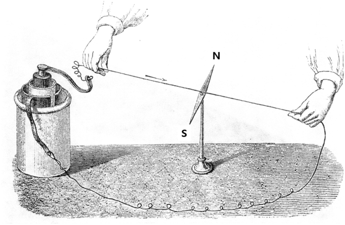</p></a> --- - Jika tidak ada arus, kompas hanya dipengaruhi oleh medan magnet bumi. - Setelah arus dialirkan, kompas akan menyimpang dari kedudukan semula. - Gejala ini dapat kita analisa sebagai berikut: kompas adalah sebuah magnet dan yang dapat menggerakkan magnet adalah medan magnet. - Medan magnet yang menggerakan magnet jarum tersebut tidak lain adalah medan magnet yang ditimbulkan kawat berarus listrik. - Ketika arah arus dibalik ternyata simpangan jarum kompas juga pada arah sebaliknya. --- - Dari uraian di atas dapat disimpulkan, bahwa **di sekitar kawat berarus listrik ada medan magnet**. - Medan magnet yang ditimbulkan oleh arus listrik dapat juga disebut **medan elektromagnet**. - Medan magnet dapat dilukiskan dengan garis-garis gaya magnet. Pola garis gaya magnet dapat ditunjukkan dengan percobaan sederhana yaitu dengan serbuk besi yang ditaburkan di atas kertas dan penghantar berbagai bentuk yang dialiri arus. --- #### Arah Induksi Magnetik Untuk mempermudah kita gunakan aturan genggaman tangan kanan sebagai berikut: <p>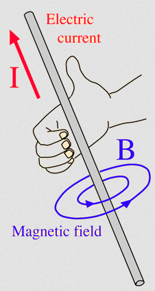</p> --- - Arah medan magnet *B* ditentukan dengan kaidah sekrup putar kanan atau tangan kanan. - Jika tangan kanan menggenggam kawat berarus listrik dengan arah ibu jari sama dengan arah arus maka arah lipatan jari-jari sama dengan arah garis gaya magnet. - Jika arah maju sekrup menyatakan arah arus, maka arah putar kanan sekrup sama dengan arah garis gaya magnet. --- - Arah induksi magnet di suatu titik merupakan garis singgung garis gaya magnet di titik tersebut (garis yang tegak lurus jari-jari). - Sering kali digunakan tanda (**⨀**) untuk menandai arah keluar bidang dan (**⨂**) untuk arah masuk bidang. --- ### Hukum Biot Savart <a href="https://www.geogebra.org/classic/qzvsxbyb" data-preview-link><p>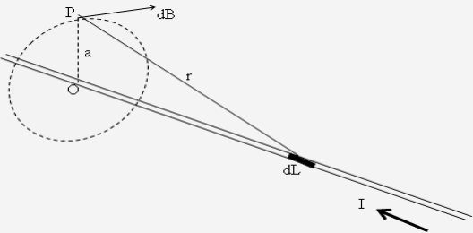</p></a> --- <div id="geogebra01"></div> --- #### Hukum Biot Savart >*Jika terdapat sebuah titik **P** berjarak **a** dari sebuah kawat berarus listrik **I**, kawat berarus itu terdiri atas bagian-bagian kecil kawat berarus yang disebut elemen arus (**dℓ**). Tiap elemen arus ini akan menimbulkan induksi magnet kecil (**dB**) yang disebabkan oleh elemen arus **dℓ**,sebanding dengan sinus sudut antara **r** dan **dℓ**, dan berbanding terbalik dengan kuadrat jarak **P** ke elemen arus **dℓ**.* --- - Dengan demikian didapatkan perumusan sebagai berikut: ###### $$\mathrm{d}\mathbf{B}=\frac{k\ I\ \mathrm{d}\ell\ \sin\alpha}{r^2}$$ --- Keterangan: - *dB* = Medan magnet di P yang disebabkan oleh elemen kawat *dL* (tesla atau T) - *k* = faktor pembanding (10<sup>−7</sup> Wb A<sup>−1</sup>m<sup>−1</sup>) - *I* = kuat arus pada kawat (A) - *dℓ* = elemen panjang kawat (m) - *r* = jarak antara P dengan *dL* (m) - *α* = sudut antara *I* dengan *r* --- #### Hukum Biot Savart - Untuk menghilangkan faktor *k* pada rumus di atas, boleh dipakai konstanta baru *μ<sub>0</sub>* (permeabilitas ruang hampa) $$k=\frac{\mu_0}{4\pi}$$ *μ<sub>0</sub>* = 4π × 10<sup>−7</sup> Wb A<sup>−1</sup>m<sup>−1</sup> sehingga ###### $$\mathrm{d}\mathbf{B}=\frac{\mu_0\ I\ \mathrm{d}\ell\ \ \sin\alpha}{4\pi r^2}$$ --- >*Medan magnet di sebuah titik **P** yang disebabkan oleh seluruh elemen arus di sepanjang **I** sama dengan jumlah vektor **dB** oleh elemen-elemen arus di sepanjang **I**. Secara matematis, hasil penjumlahan dB oleh masing-masing dL sepanjang **I**, diperoleh dengan integrasi **dB** sepanjang **I**.* --- $$\begin{split} \mathbf{B} &=\int \mathrm{d}\mathbf{B}\cr &=\frac{\mu_0}{4\pi}\int \frac{I\ \mathrm{d}\ell \ \sin\alpha}{r^2}\end{split}$$ --- #### Medan magnet dB di titik P di sekitar kawat berarus - Vektor *dB* tegak lurus terhadap *dℓ* (= arah arus) dan terhadap vektor satuan *r* (arah menuju titik P) - Besar *dB* berbanding terbalik dengan kuadrat jarak P ke *dℓ* (r<sup>2</sup>) - Besar *dB* berbanding lurus dengan kuat arus *I* dan besar *dℓ* - Besar *dB* berbanding lurus terhadap *sin α*, di mana *α* adalah sudut antara *dℓ* dan vektor satuan *r* --- - Penyelesaian persamaan di atas didapatkan dengan menganggap *α* sebagai variabel bebas, sehingga variabel lainnya dinyatakan dalam *α*. $$\tan\alpha=\frac a \ell\implies \ell=\frac a {\tan\alpha}=a\cotg\alpha$$ $$\ell'=\frac{\mathrm{d}\ell}{\mathrm{d}\alpha}=a\cosec^2\alpha$$ *$$\mathrm{d}\ell=a\cosec^2\alpha\ \mathrm{d}\alpha$$* --- $$\sin\alpha=\frac a r\implies r=\frac a {\sin\alpha}=a\cosec\alpha$$ *$$r^2=a^2\cosec^2\alpha$$* --- $$\begin{split}\mathbf{B}&=\frac{\mu_0}{4\pi}\int \frac{I\ \mathrm{d}\ell\ \sin\alpha}{r^2} \cr &= \frac{\mu_0\ I}{4\pi}\int \frac{a\cosec^2\alpha\ \sin\alpha\ \mathrm{d}\alpha\ }{a^2\cosec^2\alpha} \cr &= \frac{\mu_0\ I}{4\pi\ a}\int^{\alpha_2}_{\alpha_1} \sin\alpha\ \mathrm{d}\alpha\end{split}$$ ###### $$\mathbf{B}_P=\frac{\mu_0\ I}{4\pi\ a}-\cos\alpha\displaystyle\bigg\vert^{\alpha_2}\_{\alpha_1}=\frac{\mu_0\ I}{4\pi\ a}(\cos\alpha_1-\cos\alpha_2)$$ --- Keterangan: - *B<sub>P</sub>* = Medan magnet di P di sekitar kawat berarus (tesla atau T) - *μ<sub>0</sub>* = permeabilitas vakum (4π × 10<sup>−7</sup> Wb A<sup>−1</sup>m<sup>−1</sup>) - *I* = kuat arus pada kawat (A) - *a* = jarak antara P dengan kawat (m) - *α<sub>1</sub>* = sudut antara *I* dengan *r<sub>1</sub>* - *α<sub>2</sub>* = sudut antara *I* dengan *r<sub>2</sub>* (ujung yang lain) --- - Persamaan di atas dapat dipakai jika sudut *α<sub>2</sub>* dihitung sebagai berikut: <p>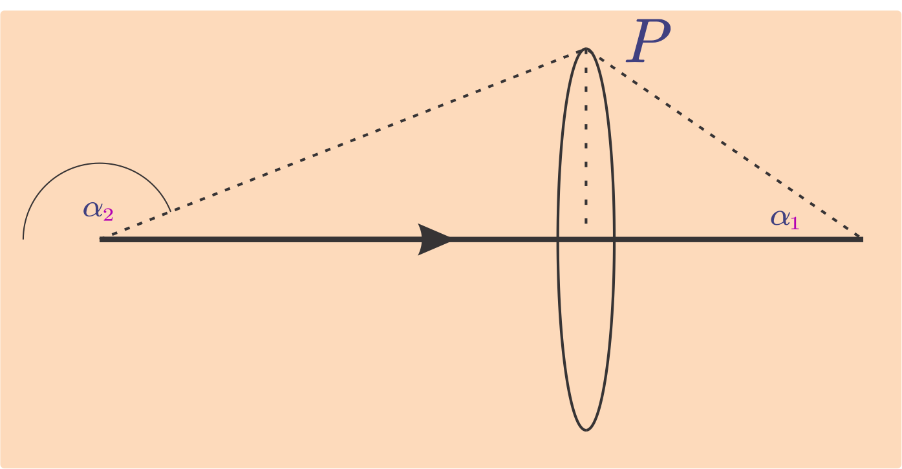</p> --- - Sementara persamaan: ###### $$\mathbf{B}_P=\frac{\mu_0\ I}{4\pi\ a}(\cos\alpha_1+\cos\alpha_2)$$ dapat dipakai jika sudut *α<sub>2</sub>* dihitung sebagai: <p>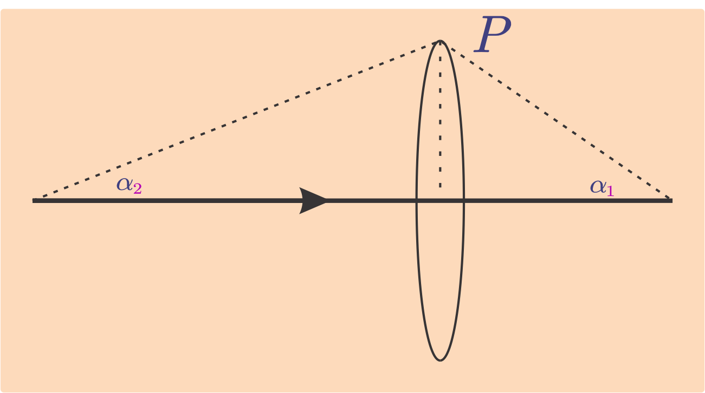</p> --- ##### 1. Medan magnet pada Kawat lurus dengan Panjang Tertentu ###### $$\mathbf{B}_P=\frac{\mu_0 I(\cos\alpha_1+\cos\alpha_2)}{4\pi a}$$ - *a* = jarak antara P dengan kawat (m) --- ##### 2. Medan magnet pada Kawat lurus dengan Panjang Tak Hingga - Untuk kawat panjang tak hingga, *α<sub>1</sub>* dan *α<sub>2</sub>* = 0°, sehingga ###### $$\mathbf{B}_P=\frac{\mu_0 I}{2\pi a}$$ --- ##### 3. Medan magnet pada Kawat Melingkar <p>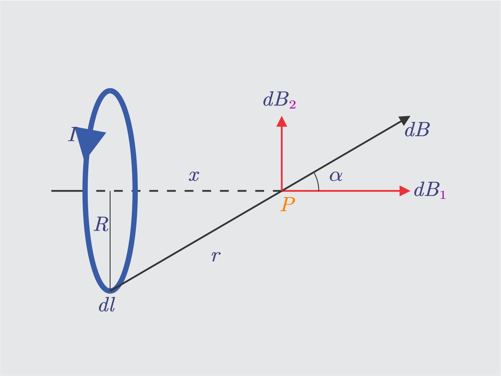</p> --- - Untuk kawat melingkar, penentuan induksi magnetik dibedakan menjadi dua, di sumbu lingkaran dan di pusat lingkaran. - Pada sumbu lingkaran, Vektor *dB* dapat diuraikan menjadi komponen *dB sin α* yang sejajar sumbu lingkaran dan *dB cos α* yang tegak lurus sumbu. - Untuk satu lingkaran penuh, komponen *dB cos α* akan saling menghapuskan. Dengan kata lain induksi magnetik di P (*B<sub>P</sub>*) sama dengan jumlah *dB sin α* yang ditimbulkan oleh seluruh elemen arus di sepanjang keliling lingkaran. --- $$\begin{split}\mathbf{B}_P &=\int \mathrm{d}\mathbf{B}\sin\alpha \cr &=\frac{\mu_0}{4\pi}\int \frac{I\ \mathrm{d}\ell \ \sin\alpha}{r^2}\cr &=\frac{\mu_0 I}{4\pi r^2} \sin\alpha\ 2\pi R\end{split}$$ ###### $$\mathbf{B}_P=\frac{\mu_0 I R \sin\alpha}{2 r^2}=\frac{\mu_0 I R^2 }{2 r^3}$$ --- - Pada pusat lingkaran, *α* = 90°, dan *r=R*, sehingga: ###### $$\mathbf{B}_O=\frac{\mu_0 I R^2 }{2 R^3}=\frac{\mu_0 I }{2 R}$$ - Untuk sejumlah N lilitan, kedua persamaan di atas menjadi: ###### $$\mathbf{B}_P=N\frac{\mu_0 I R \sin\alpha}{2 r^2}=N\frac{\mu_0 I R^2 }{2 r^3}$$ ###### $$\mathbf{B}_O=N\frac{\mu_0 I }{2 R}$$ --- - *B<sub>P</sub>* = Medan magnet di P pada sumbu lingkaran (tesla atau T) - *B<sub>O</sub>* = Medan magnet di O atau pusat lingkaran (tesla atau T) - *N* = Jumlah lilitan - *μ<sub>0</sub>* = permeabilitas vakum (4π × 10<sup>−7</sup> Wb A<sup>−1</sup>m<sup>−1</sup>) - *I* = kuat arus pada kawat (A) - *R* = jari-jari lingkaran (m) - *r* = jarak antara P dengan *dL* (m) - *α* = sudut antara sumbu lingkaran dengan *r* --- ##### 4. Medan magnet pada Solenoida <p>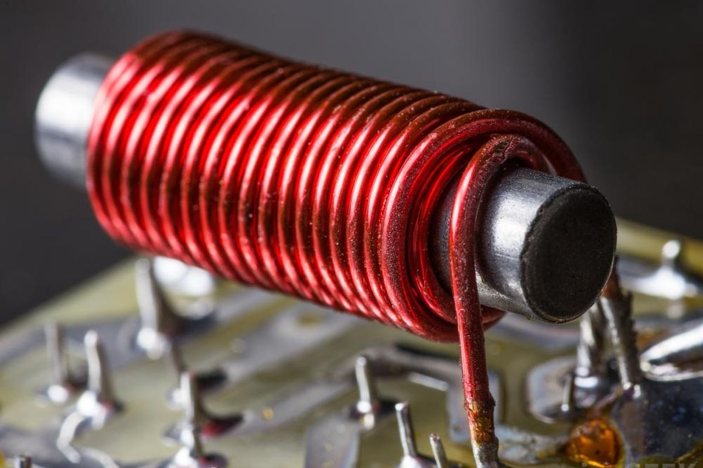</p> --- - Solenoida adalah penghantar lingkaran dengan jumlah lilitan sangat banyak dan saling berdekatan. - Pada pusat solenoida, induksi magnetiknya: ###### $$\mathbf{B}_O=N\frac{\mu_0 I }{\ell}$$ --- - Pada ujung solenoida, induksi magnetiknya: ###### $$\mathbf{B}_P=N\frac{\mu_0 I }{2\ell}$$ - *B<sub>P</sub>* = Medan magnet di P pada ujung solenoida (tesla atau T) - *B<sub>O</sub>* = Medan magnet di O atau pusat solenoida (tesla atau T) - *N* = Jumlah lilitan - *μ<sub>0</sub>* = permeabilitas vakum (4π × 10<sup>−7</sup> Wb A<sup>−1</sup>m<sup>−1</sup>) - *I* = kuat arus pada kawat (A) - *ℓ* = panjang lilitan (m) --- ##### 5. Medan magnet pada Toroida <p>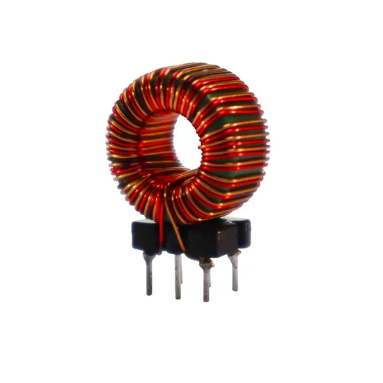</p> --- - Toroida adalah solenoida yang dilengkungkan sehingga sumbunya membentuk lingkaran menyerupai ban. - Untuk toroida yang lilitannya saling berdekatan dan keliling lingkaran yang dibentuk oleh sumbunya sama dengan *ℓ*, induksi magnetiknya: ###### $$\mathbf{B}_O=N\frac{\mu_0 I }{\ell}=N\frac{\mu_0 I }{2\pi r}=$$ dengan *ℓ* = keliling toroida --- #### Hukum Ampere >*"Jumlah medan magnet di sekitar kawat berarus dalam lintasan tertutup sebanding dengan arus yang menyebabkannya"* ###### $$\oint \mathbf{B}\cdot \mathrm{d}\mathbf{\ell}=\mu_0 I$$ --- - Jika lintasan tertutup itu adalah lingkaran yang berjari-jari *a*, maka panjang lintasan tersebut adalah keliling lingkaran. $$ \mathbf{B}\cdot (2\pi a)\=\mu_0 I$$ ###### $$ \mathbf{B}=\frac{\mu_0 I}{2\pi a}$$ yang sama dengan Hukum Biot-Savart --- #### Flux Magnet $$\mathbf{\Phi_B}=\int \mathbf{B}\cdot \mathrm{d}\mathbf{A}$$ ###### $$\mathbf{\Phi_B}=\mathbf{B} \mathbf{A} \cos\theta$$ - *Φ<sub>B</sub>* = Fluks Magnet (weber atau Wb, atau Tesla⋅m<sup>2</sup>) - *B* = Medan magnet (tesla atau T) - *A* = Luas permukaan (m<sup>2</sup>) - *θ* = sudut antara kuat medan dan normal permukaan --- #### Hukum Gauss tentang magnetisme *Fluks magnet dalam permukaan tertutup selalu sama dengan 0* ###### $$\oint \mathbf{B}\cdot \mathrm{d}\mathbf{A}=0$$ --- #### Pengertian - Tidak Ada Monopol Magnetik: Hukum ini berarti kutub magnet tunggal **tidak pernah ditemukan di alam**. - Berbentuk Dipol: Setiap magnet **selalu mempunyai dua kutub**, yaitu kutub utara dan kutub selatan. Jika sebuah magnet dipotong, kutub baru akan langsung terbentuk sehingga tetap menjadi dipol. - Garis Medan Tertutup: Garis-garis gaya medan magnet selalu membentuk jalur atau **loop tertutup** yang keluar dari kutub utara dan masuk ke kutub selatan tanpa awal atau akhir. --- #### Gaya Lorentz (Gaya Magnetik) - Sebuah kawat berarus atau sebuah muatan yang bergerak dengan kecepatan tetap yang berada dalam medan magnet akan mendapat gaya yang besarnya sebanding dengan **besar arus**, **panjang kawat** dan **besar medan magnet** tersebut. - Gaya ini yang dinamakan dengan gaya Lorentz, dan secara matematis dapat dinyatakan: --- #### Kawat Berarus ###### $${\displaystyle \mathbf {\vec{F_L}} =\vec{I}\times \mathbf {\vec{B}}\boldsymbol {\ \ell}}$$ ###### $$F_L=IBL\sin\alpha$$ - *F<sub>L</sub>* = Gaya Lorentz (N) - *I* = Kuat arus (A) - *B* = Medan Magnet (T) - *L* = panjang kawat (m) - *α* = sudut antara *I* dan *B* --- #### Muatan yang bergerak dalam medan magnet ###### $${\displaystyle \mathbf {\vec{F_L}} =q\ \mathbf {\vec{v}} \times \mathbf {\vec{B}}}$$ ###### $$F_L=qvB\sin\alpha$$ Keterangan - *F<sub>L</sub>* = Gaya Lorentz (N) - *q* = muatan (C) - *v* = kecepatan (m/s) - *B* = Medan Magnet (T) - *α* = sudut antara *v* dan *B* --- #### Arah Gaya Lorentz - Arah Gaya Lorentz dapat ditentukan menggunakan aturan telapak tangan kanan, yaitu ibu jari menyatakan arah Gaya Lorentz (*F<sub>L</sub>*), jari telunjuk menyatakan arah arus (*I*) atau arah kecepatan (*v*), jari tengah menyatakan arah medan magnet (*B*) <p>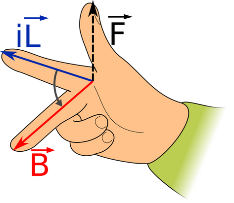</p><p>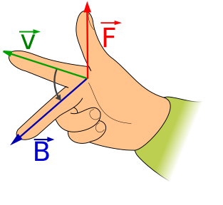</p> --- #### Gaya Lorentz antara Dua Kawat Lurus dan Panjang - Telah kita ketahui bahwa disekitar kawat berarus ada medan magnet dan kawat berarus dalam medan magnet mengalami gaya Lorentz. - Bagaimana jika dua kawat berarus listrik saling berdekatan? - Keadaan ini dapat kita analisa sebagai berikut; --- - Misal jarak kawat 1 dan 2 adalah *a* dan besar arusnya *I<sub>1</sub>* dan *I<sub>2</sub>*. Kawat 1 akan menimbulkan medan magnet *B<sub>1</sub>* dan kawat 2 menimbulkan *B<sub>1</sub>*. - Gaya Lorentz yang dialami kedua kawat adalah: $${\displaystyle \mathbf {\vec{F_{L1}}} =\vec{I_1}\times \mathbf {\vec{B_2}}\boldsymbol {\ \ell}}$$ $${\displaystyle \mathbf {\vec{F_{L1}}} =\vec{I_1}\times \frac{\mu_0 \vec{I_2}}{2\pi a} \boldsymbol {\ \ell}}$$ ###### $${\displaystyle \mathbf {\vec{F_{L1}}} =\frac{\mu_0 \vec{I_1}\vec{I_2}}{2\pi a} \boldsymbol {\ \ell}}$$ --- $${\displaystyle \mathbf {\vec{F_{L2}}} =\vec{I_2}\times \mathbf {\vec{B_1}}\boldsymbol {\ \ell}}$$ $${\displaystyle \mathbf {\vec{F_{L2}}} =\vec{I_2}\times \frac{\mu_0 \vec{I_1}}{2\pi a} \boldsymbol {\ \ell}}$$ ###### $${\displaystyle \mathbf {\vec{F_{L2}}} =\frac{\mu_0 \vec{I_2}\vec{I_1}}{2\pi a} \boldsymbol {\ \ell}}$$ ###### $${\displaystyle \mathbf {\vec{F_{L1}}} =\mathbf {\vec{F_{L2}}}=\frac{\mu_0 \vec{I_1}\vec{I_2}}{2\pi a} \boldsymbol {\ \ell}}$$ --- atau gaya Lorentz per satuan panjang dapat dinyatakan: ###### $${\displaystyle \mathbf {\frac{\vec{F_{L}}}{\boldsymbol{\ \ell}}} =\frac{\mu_0 \vec{I_1}\vec{I_2}}{2\pi a}}$$ --- #### Gaya Lorentz pada Muatan yang Berada dalam Medan Magnet - Sebuah partikel bermassa *m* bermuatan listrik *q* yang bergerak dengan kecepatan *v* di dalam medan magnet dengan induksi magnetik *B* akan mengalami Gaya Lorentz *F<sub>L</sub>* sebesar ###### $${\displaystyle \mathbf {\vec{F_L}} =q\ \mathbf {\vec{v}} \times \mathbf {\vec{B}}}$$ ###### $$F_L=qvB\sin\alpha$$ --- - *α* = sudut antara *v* dan *B*. Bila *α* = 0° atau 180°, maka lintasan muatan berupa garis lurus. - Bila *α* = sudut lancip maka lintasan muatan berupa helix atau spiral. - Bila *α* = 90º (v ⊥ B)maka *$F=qvB$*. Karena *F* selalu tegak lurus terhadap *v* maka lintasan partikel bermuatan berupa lingkaran yang jari-jari *r*-nya dapat dihitung: --- $$F_L=F_S$$ $$qvB=\frac{mv^2}{r}$$ ###### $$r=\frac{mv}{qB}$$ --- - Frekuensi putarannya dapat dihitung: $$f=\frac{\omega}{2\pi}=\frac{\frac v r}{2\pi}$$ $$f=\frac{v}{2\pi\ r}$$ $$f=\frac{v}{2\pi\ \frac{mv}{qB}}$$ ###### $$f=\frac{qB}{2\pi\ m}$$ --- ## Induksi Elektromagnetik --- - GGL Induksi - Hukum Faraday - Hukum Lenz - Transformator - Generator dan Motor --- - Induksi elektromagnetik adalah gejala timbulnya gaya gerak listrik (ggl) di dalam suatu kumparan/konduktor bila terdapat perubahan fluks magnetik pada konduktor tersebut atau bila konduktor bergerak relatif melintasi medan magnetik. --- #### GGL Induksi - GGL Induksi adalah sumber tegangan yang dihasilkan dari perubahan fluks magnetik dalam suatu kumparan. - Dalam kehidupan sehari-hari, kita jumpai berbagai alat yang menggunakan prinsip induksi elektromagnetik dan mampu menghasilkan tegangan/GGL Induksi. Dinamo atau generator adalah alat utama penghasil listrik. - Pembangkit-pembangkit listrik pada umumnya memakai prinsip ini untuk menimbulkan GGL Induksi. --- - Secara prinsip, generator berlawanan dengan motor listrik. Sementara motor listrik mengubah energi listrik menjadi energi gerak (rotasi), generator mengubah energi gerak menjadi energi listrik. <iframe width="560" height="315" src="https://www.youtube.com/embed/CWulQ1ZSE3c?si=YCgBQOfPGmIP39Qc" title="YouTube video player" frameborder="0" allow="accelerometer; autoplay; clipboard-write; encrypted-media; gyroscope; picture-in-picture; web-share" referrerpolicy="strict-origin-when-cross-origin" allowfullscreen></iframe>\ --- - Konsep gaya gerak listrik pertama kali dikemukakan oleh Michael Faraday, yang melakukan penelitian untuk menentukan faktor yang memengaruhi besarnya ggl induksi. - Besar GGL induksi dinyatakan dengan hukum Faraday. --- #### Hukum Faraday > GGL induksi pada sebuah rangkaian berbanding lurus terhadap laju perubahan fluks magnet yang melaluinya ###### $$\displaystyle {\mathscr {E}}=-{\frac {\mathrm {d} \Phi _{B}}{\mathrm {d} t}}$$ --- untuk sejumlah N lilitan ###### $$\displaystyle {\mathscr {E}}=-N{\frac {\mathrm {d} \Phi _{B}}{\mathrm {d} t}}$$ - *ε* = GGL induksi (V) - *N* = Jumlah lilitan. - *Φ<sub>B</sub>* = Fluks Magnet (weber atau Wb, atau Tesla⋅m<sup>2</sup>). - *t* = selang waktu. - **Catatan: untuk menentukan besar GGL Induksi saja, tanda minus dapat diabaikan.** --- - Faraday menemukan bahwa GGL induksi pada sebuah rangkaian berbanding lurus terhadap laju perubahan fluks magnet yang melaluinya, sementara fluks magnetik dinyatakan sebagai jumlah garis gaya listrik yang menembus bidang secara tegak lurus. $$\mathbf{\Phi_B}=\mathbf{B} \mathbf{A} \cos\theta$$ --- ###### $$\displaystyle {\mathscr {E}}=-N{\frac {\mathrm {d} \Phi _{B}}{\mathrm {d} t}}=-N{\frac {\mathrm {d} \mathbf{B} \mathbf{A} \cos\theta}{\mathrm {d} t}}$$ - Jika kumparan diputar dengan kecepatan sudut *ω*, maka $\theta=\omega t$, sehingga ###### $$\displaystyle {\mathscr {E}}=-NBA{\frac {\mathrm {d}}{\mathrm {d} t}}\cos{\omega t}=NBA\omega\sin{\omega t}$$ $$\displaystyle {\mathscr {E}_{maks}}=NBA\omega$$ --- #### Hukum Lenz - Apabila ggl induksi dihubungkan dengan suatu rangkaian tertutup dengan hambatan tertentu, maka mengalirlah arus listrik. - Arus ini dinamakan dengan arus induksi. Arus induksi dan ggl induksi hanya ada selama perubahan fluks magnetik terjadi. - Hukum Lenz menyatakan arah arus induksi (tanda minus pada persamaan Faraday). --- #### Hukum Lenz >Arah arus induksi sedemikian sehingga cenderung menimbulkan medan magnet *berlawanan* dengan perubahan fluks magnet yang menyebabkan induksi. > atau >“ggl induksi selalu membangkitkan arus yang medan magnetnya berlawanan dengan asal perubahan fluks”. > --- - Jika GGL disebabkan oleh gerakan suatu penghantar dalam medan magnet, arah arus induksinya adalah sedemikian rupa sehingga arah medan magnet pada penghantar berlawanan dengan arah geraknya. Jadi gerakan penghantar dilawan. - Jika GGL disebabkan oleh perubahan fluks yang melalui suatu rangkaian tertutup, arus menimbulkan medan magnet yang *berlawanan* dengan medan asal, jika fluksnya bertambah; dan *searah* dengan medan asal, jika fluksnya berkurang. --- <p>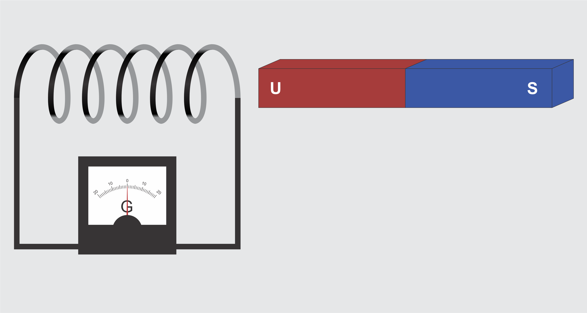</p> - Magnet batang berada di dekat kumparan, dalam keadaan diam. Galvanometer menunjuk angka nol. --- <p>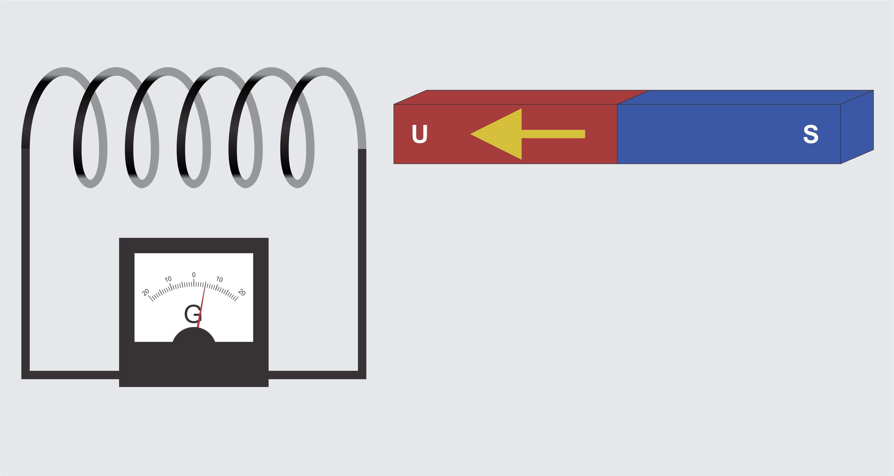</p> - Magnet batang digerakkan mendekati kumparan. Galvanometer bergeser ke kanan. --- <p>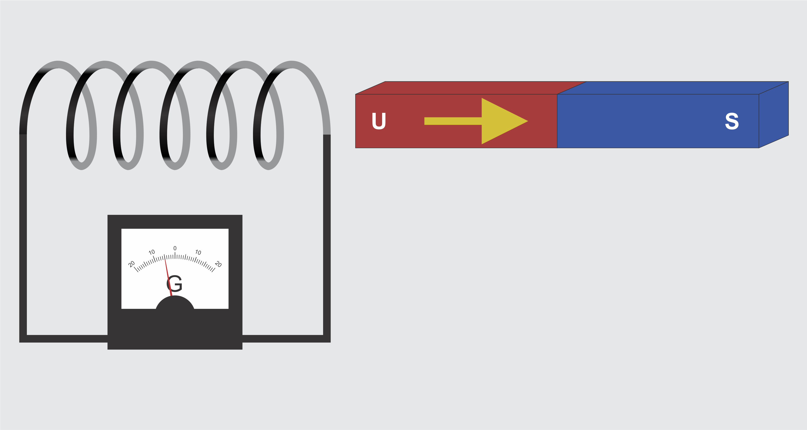</p> - Magnet batang digerakkan menjauhi kumparan. Galvanometer bergeser ke kiri. --- ### Faktor-faktor Penyebab Timbulnya GGL Induksi - Penyebab utama timbulnya ggl induksi adalah terjadinya perubahan fluks magnetik yang dilingkupi oleh suatu loop kawat. - Besarnya fluks magnetik telah dinyatakan sebagai: *$\mathbf{\Phi_B}=\mathbf{B} \mathbf{A} \cos\theta$* --- + Dengan demikian, penyebab timbulnya ggl pada suatu kumparan, adalah: 1. perubahan luas bidang kumparan (*A*), 2. perubahan orientasi sudut kumparan (*θ*) terhadap medan, 2. perubahan induksi magnetik (*B*) --- ##### 1. GGL Induksi Akibat Perubahan Luasan pada Kumparan (*A*) <p>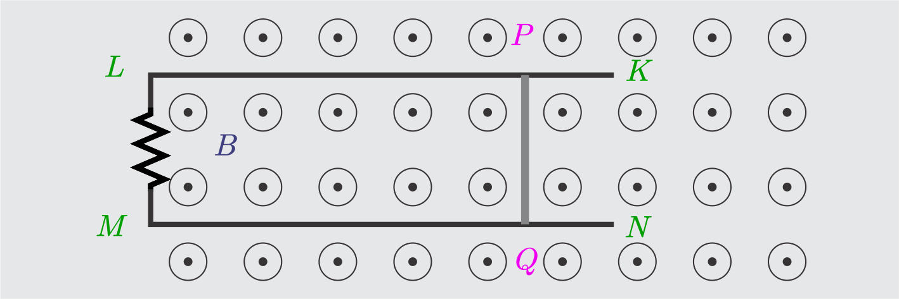</p> - Gambar menunjukkan sebuah penghantar KLMN berbentuk U dengan ujung P-Q yang dapat bergeser ke kiri dan ke kanan. Penghantar berada dalam medan magnet *B* (arah keluar). --- - Pada ujung lain, penghantar dihubungkan dengan sebuah hambatan. - Ketika ujung P-Q bergerak ke kanan dengan kecepatan *v* selama selang waktu *t*, maka luas bidang kumparan (A) bertambah sebesar *$\Delta A=l\Delta \mathbf{x}=l\mathbf{v}\Delta t$*. <p>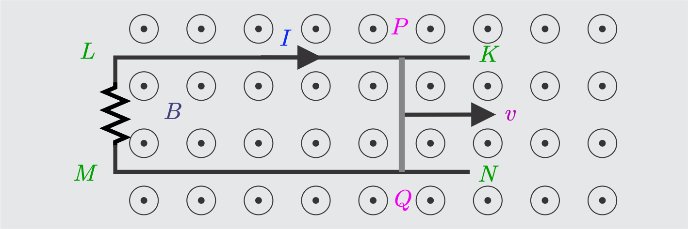</p> --- - Perubahan fluks magnetik $$\mathbf{\Phi_B}=\mathbf{B} \Delta\mathbf{A} =\mathbf{B} l\mathbf{v}\Delta t$$ $$\displaystyle {\mathscr {E}}=-{\frac {\mathrm {d} \Phi _{B}}{\mathrm {d} t}}=-{\frac {\mathbf{B} l\mathbf{v}\mathrm {d} t}{\mathrm {d} t}}=\mathbf{B} l\mathbf{v}\$$ --- - Untuk menentukan arah arus kita gunakan Hukum Lenz. - Karena luas bertambah, maka fluks magnet bertambah. Sesuai hukum Lenz, arus induksi akan menimbulkan medan magnet yang *berlawanan* dengan medan asal. - Medan asal mengarah keluar sehingga untuk menghasilkan medan yang berlawanan, arus harus mengarah ke atas (dari *Q ke P*) --- ##### 2. GGL Induksi Akibat Perubahan Orientasi Sudut (*$\theta$*) Kumparan terhadap Medan - Perubahan sudut *θ* antara induksi magnetik *B* dan arah bidang normal dapat menyebabkan timbulnya ggl induksi, yang besarnya dapat ditentukan melalui persamaan: $$\displaystyle {\mathscr {E}}=-{\frac {\mathrm {d} \Phi _{B}}{\mathrm {d} t}}=-{\frac {\mathrm {d} \mathbf{B} \mathbf{A} \cos\theta}{\mathrm {d} t}}$$ --- - Jika laju perubahan *cos θ* tetap, sementara *B* dan *A* tetap, persamaan itu menjadi: ###### $$\displaystyle {\mathscr {E}}=-\mathbf{B} \mathbf{A}\Big({\frac {\cos\theta_1-\cos\theta_0}{t_1-t_0}\Big)}$$ - *θ<sub>1</sub>* dan *θ<sub>2</sub>* = sudut awal dan sudut akhir antara arah normal bidang dengan arah induksi magnet. --- ##### 2. GGL Induksi Akibat Perubahan Induksi Magnetik (*B*) - Perubahan induksi magnetik *B* juga dapat menimbulkan ggl induksi pada luasan bidang kumparan yang konstan, yang dinyatakan sebagai berikut: $$\displaystyle {\mathscr {E}}=-N{\frac {\mathrm {d} \Phi _{B}}{\mathrm {d} t}}=-N{\frac {\mathrm {d} \mathbf{B} \mathbf{A} \cos\theta}{\mathrm {d} t}}$$ --- - Jika laju perubahan *B* tetap, sementara *cos θ* dan *A* tetap, persamaan itu menjadi: ###### $$\displaystyle {\mathscr {E}}=-N\mathbf{A}\cos\theta \Big({\frac {\mathbf{B}_1-\mathbf{B}_0}{t_1-t_0}\Big)}$$ --- #### Aplikasi Induksi Elektromagnetik <div class="r-hstack justify-center"> <div data-id="name1" style="background: #555; width: 300px; height: 70px; margin: 10px; border-radius: 5px;"><small>Gitar Listrik</small></div> <div data-id="name1" style="background: #555; width: 300px; height: 70px; margin: 10px; border-radius: 5px;"><small>Kompor Induksi</small></div> <div data-id="name1" style="background: #555; width: 300px; height: 70px; margin: 10px; border-radius: 5px;"><small>MCB (*Miniature Circuit Breaker*)</small></div> </div> <div class="r-hstack justify-center"> <div data-id="box2" style="background: #fff; width: 400px; height: 450px; margin: 10px; border-radius: 5px;"><p>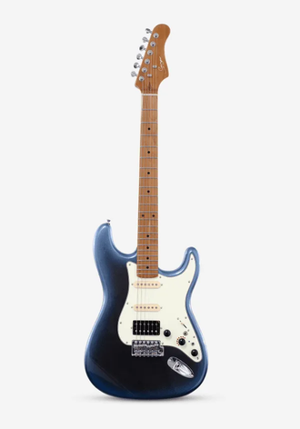</p></div> <div data-id="box2" style="background: #fff; width: 400px; height: 450px; margin: 10px; border-radius: 5px;"></div> <div data-id="box2" style="background: #fff; width: 400px; height: 450px; margin: 10px; border-radius: 5px;"><p>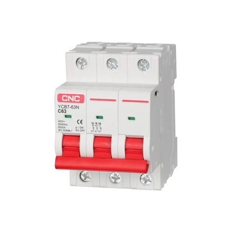</p></div> </div> --- #### Transformator (Trafo) <p>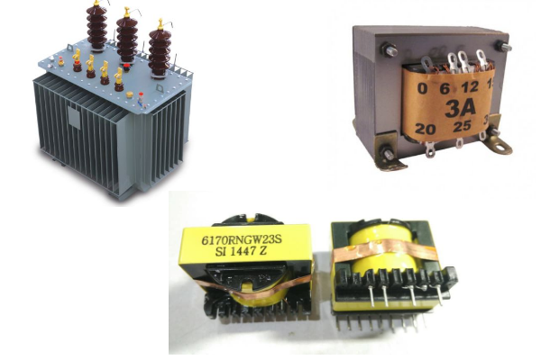</p> --- - Transformator (trafo) adalah alat atau komponen listrik yang berfungsi untuk mengubah (menurunkan atau menaikkan) tegangan. - Transformator *step-up* : berfungsi menaikkan tegangan. - Transformator *step-down* : berfungsi menurunkan tegangan. --- - Transformator terdiri atas dua kumparan kawat yang membungkus inti besi, yaitu kumparan primer dan sekunder. - Pada transformator *step-up* jumlah jumlah lilitan primer (Np) lebih sedikit daripada jumlah lilitan sekunder (Ns). Pada transformator *step-down* jumlah jumlah lilitan primer (Np) lebih banyak daripada jumlah lilitan sekunder (Ns). - Transformator dirancang sedemikian rupa sehingga hampir seluruh fluks magnet yang dihasilkan arus pada kumparan primer dapat masuk ke kumparan sekunder. --- $$\displaystyle {\mathscr {E}_P}=-N_P{\frac {\mathrm {d} \Phi _{P}}{\mathrm {d} t}} \text{ dan }\displaystyle {\mathscr {E}_S}=-N_S{\frac {\mathrm {d} \Phi _{S}}{\mathrm {d} t}}$$ $$\displaystyle {\frac {\mathrm {d} \Phi _{P}}{\mathrm {d} t}=\frac {\mathrm {d} \Phi _{S}}{\mathrm {d} t}}$$ ###### $$\displaystyle {-\frac{\mathscr {E}_P}{N_P}=-\frac{\mathscr {E}_S}{N_S}}\implies \frac{\mathscr {E}_P}{\mathscr {E}_S}=\frac{N_P}{N_S}$$ - *ε* = GGL induksi (V) - *N* = Jumlah lilitan. --- ##### Transformator Ideal - Jika tidak ada energi yang hilang (transformator ideal) $$\mathscr {E}_S I_S t=\mathscr {E}_P I_P t$$ $$I_S=\frac{\mathscr {E}_P}{\mathscr {E}_S}I_P=\frac{N_P}{N_S}I_P$$ ###### $$I_P:I_S=N_S:N_P$$ - *I* = Kuat arus (A) - *N* = Jumlah lilitan. --- ##### Transformator tidak Ideal - Efisiensi transformator didefinisikan sebagai daya keluaran dibagi dengan daya masukan $$\eta=\frac{P_S}{P_P}\times 100\\% =\frac{\mathscr {E}_S I_S}{\mathscr {E}_P I_P}\times 100\\% =\frac{N_S I_S}{N_P I_P}\times 100\\% $$ sehingga perbandingan arus untuk trafo tidak ideal ###### $$\frac{I_P}{I_S}=\frac{\mathscr {E}_S}{\mathscr {E}_P}\frac{1}{\eta}=\frac{N_S}{N_P}\frac{1}{\eta}$$ - *η* = efisiensi --- #### Generator dan Motor <p>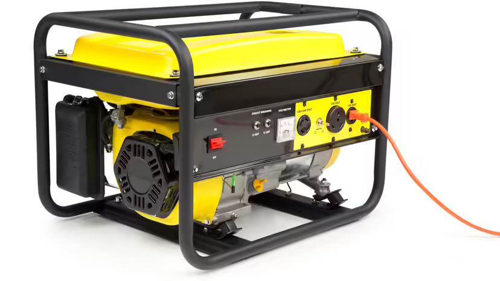</p> --- - Generator mengubah energi kinetik (mekanik) menjadi energi listrik, motor sebaliknya. - Jika sebuah generator dengan *N* lilitan dan luasan *A* berputar dalam medan magnet *B* dengan kecepatan sudut *ω*, fluks magnetik akan mengikuti persamaan ###### $$\Phi _{B}=BA\cos{\omega t}$$ --- $$\displaystyle {\mathscr {E}}=-N{\frac {\mathrm {d} \Phi _{B}}{\mathrm {d} t}}$$ ###### $$\displaystyle {\mathscr {E}}=-NBA{\frac {\mathrm {d}}{\mathrm {d} t}}\cos{\omega t}=NBA\omega\sin{\omega t}$$ $$\displaystyle {\mathscr {E}_{maks}}=NBA\omega$$ <div class="r-hstack justify-center"> <div data-id="name1" style="width: 500px; height: 70px; margin: 10px; border-radius: 5px;"><p><ul><li><em>ε</em> = GGL induksi (V)</li><li><em>B</em> = Medan Magnet (T)</li><li><em>ω</em> = kecepatan sudut (rad/s)</li></ul></div> <div data-id="name1" style="width: 500px; height: 70px; margin: 10px; border-radius: 5px;"><p><ul><li><em>N</em> = Jumlah lilitan</li><li><em>A</em> = Luasan kumparan (m<sup>2</sup>)</li><li><em>t</em> = selang waktu (s)</li></ul></div> </div> --- <p>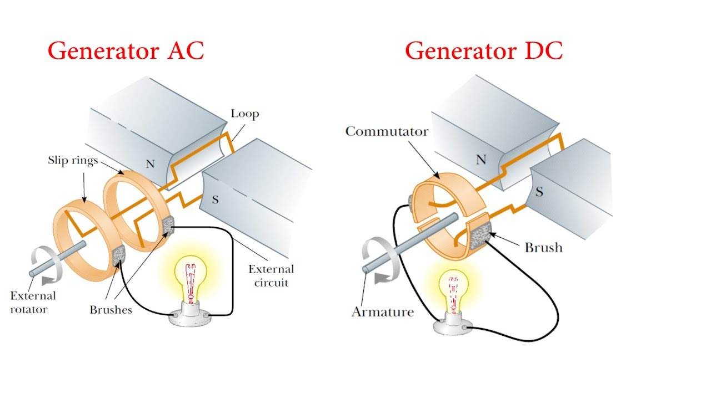</p> --- <p>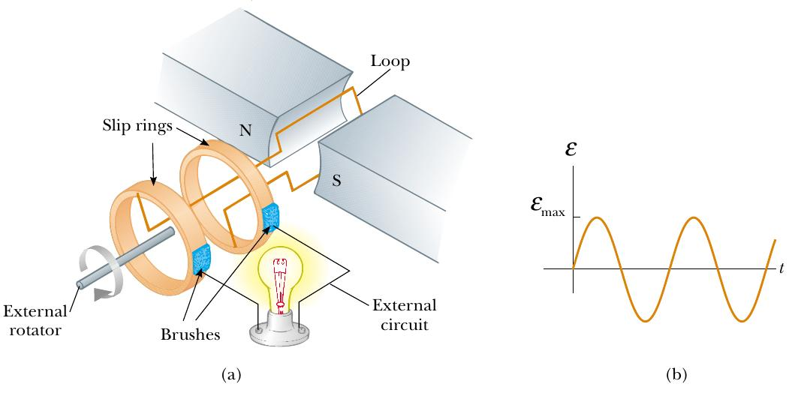</p> --- <p>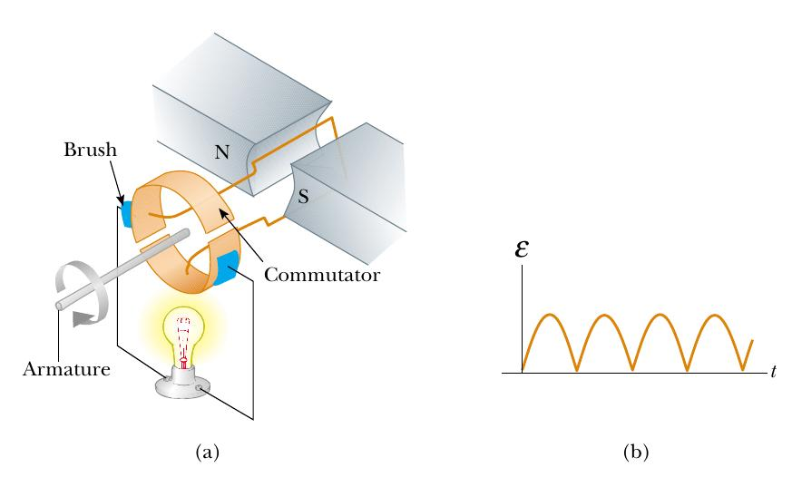</p> --- ##### Motor Listrik <p>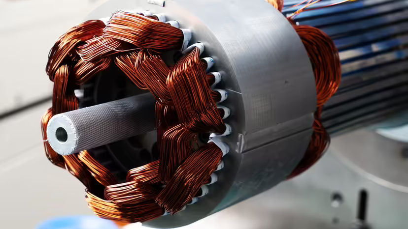</p> --- ### Induktor <p>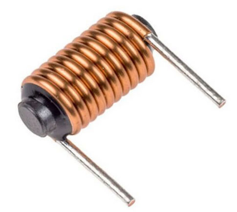</p> - Induktor adalah komponen listrik yang berfungsi menimbulkan mendan magnet pada area tertentu. Simbolnya <img src="../resources/images/in01.png" height="25px" style="margin:0">. --- - Jika pada setiap lilitan *N* mengalir arus sebesar *i*, fluks magnetik sebesar *Φ<sub>B</sub>* akan menyatukan lilitan-lilitan tersebut. - Induktansi *L* dari induktor tersebut dinyatakan sebagai: ###### $$L=\frac {N\Phi _{B}}{i}$$ - *L* = Induktansi (Henry=V.s/A) --- #### Induktansi diri - Perubahan fluks magnetik dalam sebuah penghantar dapat terjadi karena perubahan arus yang mengalir padanya. Sementara perubahan fluks magnet menyebabkan arus induksi. Proses ini disebut *induktansi diri*. - Untuk semua induktor, berlaku: $$L=\frac {N\Phi _{B}}{i} \text{ atau } N\Phi _{B}=Li$$ --- - Sementara menurut Hukum Faraday: $$\displaystyle {\mathscr {E}}=-N{\frac {\mathrm {d} \Phi _{B}}{\mathrm {d} t}} \text{ maka }$$ ###### $$\displaystyle {\mathscr {E}}=-L{\frac {\mathrm {d}I}{\mathrm {d} t}}$$ - *L* = koefisien induktansi diri (Henry=V.s/A) --- #### Induktansi Timbal Balik - Jika dua buah kumparan atau induktor berdekatan satu sama lain, arus yang mengalir pada kumparan pertama akan menimbulkan fluks magnet yang akan menginduksi kumparan kedua sehingga timbul ggl induksi (dan juga arus induksi). - Arus induksi pada kumparan kedua kemudian menimbulkan fluks magnetik yang kemudian menginduksi kumparan pertama sehingga timbul juga ggl induksi (dan arus induksi). Proses ini disebut **induktansi timbal balik**. --- $$\displaystyle {\mathscr {E}_S}=-M{\frac {\mathrm {d} I_P}{\mathrm {d} t}} $$ $$-N_S{\frac {\mathrm {d} \Phi _{S}}{\mathrm {d} t}}=-M{\frac {\mathrm {d} (\frac{N_S}{N_P}I_S)}{\mathrm {d} t}} $$ ###### $$M=N_P\frac {\mathrm {d} \Phi _{S}}{\mathrm {d} I_S} =N_S\frac {\mathrm {d} \Phi _{P}}{\mathrm {d} I_P}$$ - *M* = koefisien induktansi timbal balik (Henry=V.s/A) --- #### Induktansi Pada Toroida dan Solenoida - Sebuah solenoida yang mempunyai *N* lilitan, penampang *A* dan panjang *ℓ*, serta terjadi perubahan arus *$\frac{\mathrm {d} I}{\mathrm {d} t}$*, ggl induksi dalam toroida: $$\begin{split}\displaystyle {\mathscr {E}}&=-L{\frac {\mathrm {d}I}{\mathrm {d} t}} \cr -N{\frac {\mathrm {d} \Phi _{B}}{\mathrm {d} t}}&=-L{\frac {\mathrm {d}I}{\mathrm {d} t}} \cr -N{\frac {\mathrm {d}(A\ \mu_0\frac {N} {\ell} \mathrm {d}I)}{\mathrm {d} t}}&=-L{\frac {\mathrm {d}I}{\mathrm {d} t}}\end{split}$$ --- ###### $$L=\frac{\mu_0 N^2 A}{\ell}$$ - *L* = induktansi pada solenoida/toroida (H=henry) - *μ<sub>0</sub>* = permeabilitas vakum (4π × 10<sup>−7</sup> Wb A<sup>−1</sup>m<sup>−1</sup>) - *N* = jumlah lilitan - *A* = luas penampang solenoida/toroida (m<sup>2</sup>) - *ℓ* = panjang solenoida atau keliling toroida (m) --- #### Energi Dalam Induktor - Ketika sebuah induktor dihubungkan ke baterai, arus mengalir dalam induktor, dan usaha (kerja) dilakukan oleh baterai pada induktor. Dari definisi induktansi diri *L*, kita dapatkan: $$\displaystyle {\mathscr {E}}=-L{\frac {\mathrm {d}I}{\mathrm {d} t}}$$ - GGL induksi *ε* di antara ujung-ujung induktor menyebabkan arus mengalir melalui induktor. Daya yang dikeluarkan dalam mengalirkan arus *I* melalui beda potensial *V* ialah: --- $$P = V I $$ - Karena GGL induksi menghasilkan beda potensial *V = E* di antara ujung-ujung induktor, daya sesaat yang dihasilkan dalam induktor oleh baterai ialah: $$\begin{split}P&=VI \cr &=\mathscr {E}I \cr &=-L{\frac {\mathrm {d}I}{\mathrm {d} t}}I\end{split}$$ --- - Total kerja W yang dikerjakan baterai pada induktor, yaitu : $$\begin{split}\int \mathrm{d}W&= \int P\mathrm{d}t \cr &=\int-L{\frac {\mathrm {d}I}{\mathrm {d} t}}I\ \mathrm {d} t\cr &=-\int LI\ \mathrm {d}I\end{split}$$ ###### $$W = \frac 1 2 L I^2 $$ --- - untuk solenoida/toroida, pada pusat solenoida, induksi magnetiknya: $$\mathbf{B}=\frac{N\ \mu_0 I }{\ell} \text{ atau } I=\frac{\mathbf{B}\ell}{N\ \mu_0}$$ $$W = \frac 1 2 \Big(\frac{\mu_0 N^2 A}{\ell}\Big) \Big(\frac{\mathbf{B}\ell}{N\ \mu_0}\Big)^2 $$ ###### $$W = \frac 1 2 \Big(\frac{\mathbf{B}^2\ A\ \ell}{\mu_0}\Big)$$ --- - *W* = Energi (joule) - *B* = Medan magnet di di pusat solenoida/toroida (tesla atau T) - *μ<sub>0</sub>* = permeabilitas vakum (4π × 10<sup>−7</sup> Wb A<sup>−1</sup>m<sup>−1</sup>) - *A* = luas penampang solenoida/toroida (m<sup>2</sup>) - *ℓ* = panjang solenoida atau keliling toroida (m)